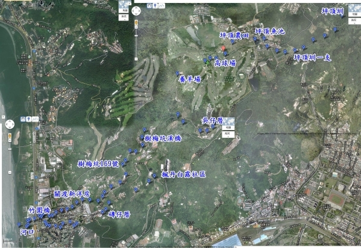

|
>>溪流定位 |
|
樹梅坑溪的流域範圍及河流經的路線 |
|
樹梅坑溪的流域範圍以及流經的區域，收集的相關資料的中，不是正確描述溪流的位置。 |
|
1.查閱相關樹梅坑溪沿溪地圖，但都是溪流簡圖，與現況差距很大。 |
|
2.利用GOOGLE地圖搜尋，又發現很多地方被地貌上的建物或植物遮蔽，只能看見部分溪流的區域。 |
|
3.我們就利用相機的GPS定位系統，沿著溪流照相，在可以到達的地方約每100∼300公尺照相找出經緯度，沿著溪流共拍攝了約100個GPS衛星定位點。 |
|
4.利用100個GPS衛星定位點在到GOOGLE地圖上，設定經緯度座標點，並校正座標位置，將座標點位置連線，就可以找出樹梅坑溪的精確位置，重新正確的訂出樹梅坑溪的流經的路徑。 |
| |
|
5. Google定位地圖
（藍色小點）
|
|
 |
| |
|
6.完成樹梅坑溪流地圖
（將定位點連結） |
|
 |
|
|
|
樹梅坑溪水源發源自貴子坑溪中游地區（N25° 9' 35.88 E121° 29' 42.51"
高度322M），經過小坪頂台地、流入吳仔厝北側的坡地、經樹梅坑一帶，到達竹圍地區三角平原的頂端（樹梅坑169號）流經民生里，在竹圍橋附近與小八里坌溪會流，再由烏石港流入淡水河N25°
8' 13.97", E121° 27' 28.31"，總長度約12公里。 |
|
|
|
樹梅坑溪在整流條溪流很明顯的分為幾個區段，分析如下表 |
|
區段 |
分界點 |
環境現況 |
生態現況 |
溪流長度 |
海拔高度 |
|
源流上區 |
坪頂圳 |
引水溝渠 |
原始森林 |
1200M |
322M |
|
源流下區 |
坪頂圳一支 |
數條灌溉溝渠 |
農耕地 |
800M |
316M |
|
上游上區 |
坪頂水池 |
農田灌溉溝渠 |
農耕地 |
900M |
283M |
|
上游下區 |
高球場水池 |
野溪與埤塘 |
溝渠高球場 |
950M |
274M |
|
中游上區 |
樹梅坑溪橋 |
野溪狀態 |
森林 |
2400M |
130M |
|
中游下區 |
樹梅坑169號 |
整治的溪流 |
荒廢農田 |
1500M |
30M |
|
下游上區 |
關渡新洋房 |
整治溪流部分溪流加蓋 |
農田 |
1100M |
20M |
|
下游下區 |
竹圍橋 |
大部分溪流加蓋 |
住宅區 |
1000M |
15M |
|
河口區 |
烏石港 |
感潮帶高度整治 |
潮間帶溪流 |
800M |
10M |
|